2019 Holiday Web Page

| Erich and Margie's 2019 Holiday Web Page | |
January Erich attended the Branton's New Year's Eve party. Erich resolved to watch a movie per day in 2019. Margie saw a new bird for her: black-bellied whistling duck. A coyote was spotted in our neighborhood. Erich spotted someone carrying a baby pig in the grocery store. On a walk, we found a fruit that looked like a face. Erich started playing backgammon weekly with Bill. We finished re-watching the original Star Trek series, despite how sexist it was. Erich demonstrated, once again, how much he sucks at bocce. We enjoyed seeing Miguel's pictures of Antarctica. We went to St. Augustine for a musical weekend, hearing John Winters, an ecology-minded trio, Mark Evans, and David Wilcox. During the trip, Margie saw Gamble Rogers' old house, Erich got an amaretto sour containing whiskey instead, and we saw some furries. We saw the total lunar eclipse. We got an URGENT email question about pears and goat cheese from Barb. We continued hosting home trivia gatherings every 3 weeks or so. Erich recommends the movie "Ex Machina". Margie mentions Chip Taylor, the unknown but not unsung writer of "Wild Thing" and "Angel of the Morning"
February We watched Groundhog Day for like the 20th time. We had Missy and Barb over for dinner and games. Erich got to converse online with one of the top 10 chess players in the world. We visited Erin and Tom in Indialantic. We celebrated the Chinese New Year by playing mah jongg and eating Chinese food at Barb's. Then Erich went to another games party that evening. Erich designed two puzzles for someone who donated $100 to the ACLU in Erich's name. We had dinner with Servio, who was a visiting professor at Stetson 15 years ago. Erich recommends the movie "Seven Pounds". Margie mentions Don Schlitz, the unknown but not unsung writer of "The Gambler" and "When You Say Nothing At All".
March We saw Brian Smalley in Mount Dora. We enjoyed the Dunn's pot luck slide show on Romania and Bulgaria. We had a nice day at the beach. We redeemed ourselves and won the medal at Bill and Judi's second Bocce event. We enjoyed a games party at Regina's place. Pancho developed a digestive issue and had to spend two nights at a vet hospital recovering. Erich recommends the movie "The Secret Life of Bees". Margie mentions Bob Crew and Bob Gaudio, the unknown but not unsung writers of "Walk Like a Man" and other Four Seasons hits.
April Pancho spent 4 more nights at the vet hospital. We went to St. Augustine to hear a night of folk music. Erich actually got paid cash instead of wine for trivia. Erich got food poisoning on tax day, hopefully not an omen. Three horses got loose from our neighbors' yard and ran around our street. Erich went with some friends to see flamenco at the Yalaha Bakery. Erich managed to win the "most improved" trophy at our annual mini-golf tournament with friends. DeLand got some cool traffic signs. Pancho spent another 7 nights at the vet, but has since made a full recovery. Margie bought an "impulse buy" magazine about the Eagles. Erich recommends the movie "Wonder". Margie mentions Chet Powers, the unknown but not unsung writer of "Get Together".
May Stetson's beach volleyball team made the top-8 national tournament, and beat the top team in the country. We attended Gamblefest, where we saw many of our favorite local musicians, even though it poured rain the last day. We enjoyed another games party at Regina's place. Some turkeys hung out on our street. We went to another Bocce gathering in blistering heat, where Erich spilled red wine all over himself. Erich got extremely lucky at backgammon and won $36. We attended the Cuba slideshow of Miguel and Regina. We found a mud dauber nest on our front door, multiple times. Erich recommends the movie "Black Butterfly". Margie mentions Ronald White, the unknown but not unsung co-writer of "My Girl".
June We saw Brian Smalley play in Mount Dora. We lost terribly at koi koi to Barb. Some of Erich's puzzles were used for a retirement home newsletter. Erich recommends the movie "Lion", but definitely not the movie "Four Lions". Margie mentions Billy Roberts, the unknown but not unsung writer of "Hey Joe".
July Margie fractured her ankle in a dog-walking incident. Some of Erich's puzzles were made available for the TI-994 calculator. A salamander appeared in the pot at Erich's poker game. An owl visited our yard. Some of Erich's puzzles were used in a cognitive psychology experiment performed at Texas A&M University. Erich recommends the movie "Room", but definitely not the movie "Four Rooms". Margie mentions Paul Craft, the unknown but not unsung writer of Midnight Flyer and "Keep Me From Blowin' Away".
August Some of Erich's puzzles were used in a program for under-served youth. Erich went to Regina's birthday/games party. Erich went through the "10 items or less" lane with 24 items. After a cashier at Arby's refused to honor our coupon, Margie talked to the manager to get satisfaction. A stranger complimented Margie's parallel parking skills. We did an escape room for the first time, and it was free since Erich is consulting for them. Margie's car was rear-ended, an hour before we hosted another trivia night. We went with some friends to see Ben Prestage perform at a biker bar. Erich would recommend the movie "Avengers: Endgame", except everyone in the world has already seen it. Margie mentions Steve Goodman, the unknown but not unsung writer of "City of New Orleans".
September Hurricane Dorian scared us, but in the end was just another rainstorm. Margie was trending on NPR's facebook page. We had a marvelous Korean meal with Missy in Daytona. Erich tried waterskiing and it did not go well. On the way to bring her car to a body shop, Margie backed into a tree, totaling her 18-year-old Prelude. She bought a new all-electric Chevy Bolt to replace it. Erich recommends the movie "When a Man Loves a Woman". Margie mentions Lowell George, the unknown but not unsung writer of "Willin'".
October Erich showed symptoms of carpal tunnel. Margie went with 5 friends to see Brian Smalley again. At Dunkin Donuts, Erich got 6 cents less in change than he should have because the cashier said they didn't have any pennies. Erich went to a special showing of "The Incredible Shrinking Man" at Miguel and Regina's. We went to see The Lubben Brothers and Salt and Pine in St. Augustine. We got our roof cleaned off for free, because we canceled an appointment with someone who didn't check his phone messages for a few days. Erich recommends the movie "Fighting with my Family". Margie mentions Dick Feller, the unknown but not unsung co-writer (with Jerry Reed) of the soundtrack for "Smokey and the Bandit".
November We went to the Barberville Fall Jamboree, to see old favorites like Remedy Tree and John R. Butler, and new favorites like Michelle Ingrham. We went to the Deland Art Festival and saw several friends and Ben Prestage and Mark Hodgson play. We hosted Missy and Barb for Thanksgiving dinner. Erich recommends the movie "Temple Grandin". Margie mentions Chris Smither, the unknown but not unsung writer of "Love You Like a Man".
December We attended a games party at the Dunn's. Erich helped Barb bake some cookies. Pancho became a VIP. The House of Representatives gave us an early Christmas present. Erich had Yorkshire pudding for the first time. A red-shouldered hawk came to guard our driveway. Erich discovered that one of his computer applications has a different icon on Christmas. Erich completed his movie challenge on Christmas, and you can see his ratings here. Pancho liked his first trip to the beach. Erich's health care premium went up from $0 to $29/month. Margie mentions Richard Berry, the unknown but not unsung writer of Louie Louie.
Erich said goodbye to an unprecedented number of TV shows: "The Village", "Crazy Ex-Girlfriend", "Angie Tribeca", "You're the Worst", "Jessica Jones", "Jane the Virgin", "Life in Pieces", "Wrecked", "The Enemy Within", "Madam Secretary", "iZombie", "House of Cards", "Splitting Up Together", "Santa Clarita Diet", "I Feel Bad", "Orange is the New Black", "Timeless", "Travelers", "Proven Innocent", "The Jim Jeffries Show", and "Suits". Margie joined him in mourning "A.P. Bio", "The Cool Kids", "Bluff City Law", "Elementary" and "The Big Bang Theory".
Erich's holiday puzzles can be found here. You can see our archive of previous holiday web pages here.

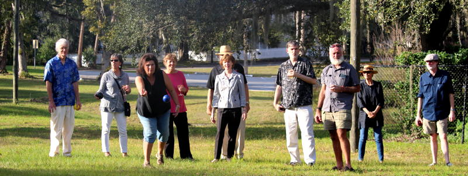 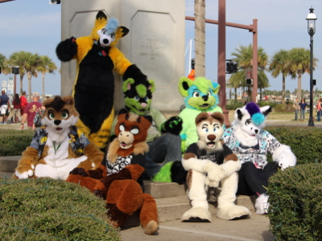 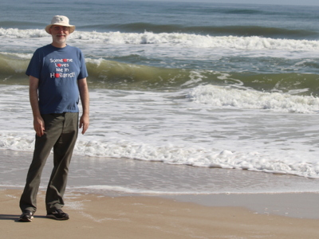 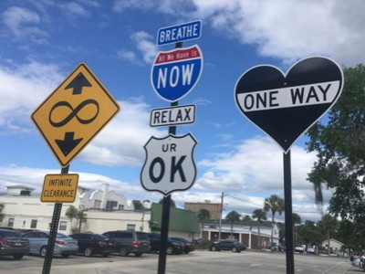 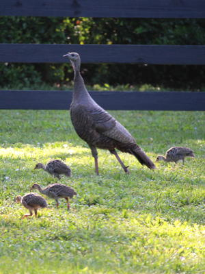 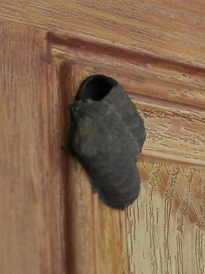 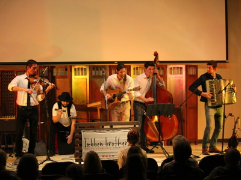 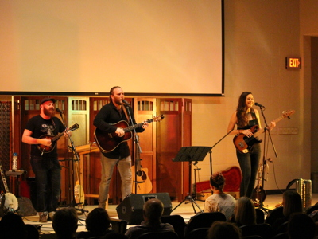 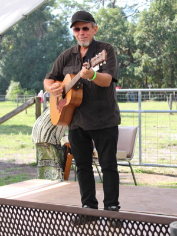 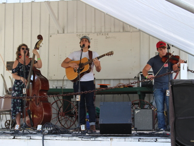 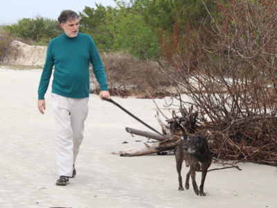 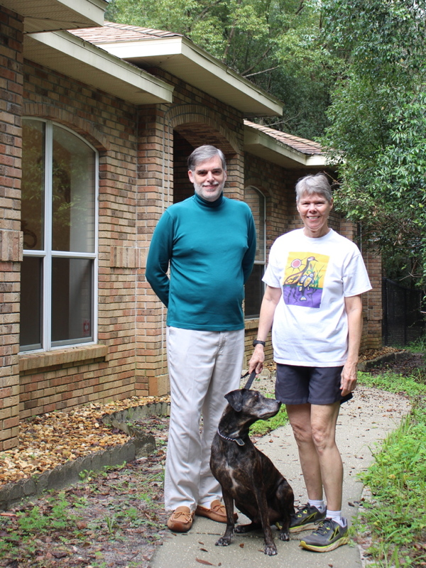